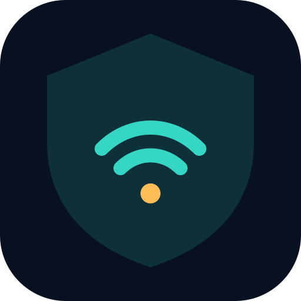

Vigía Suite · Defensa local
Observa
lo invisible.
Un ESP32 transforma las señales cercanas en contexto útil para comprender tu superficie de exposición.
Desplaza para explorar
Vigía Suite Abrir laboratorioVigía Suite · Defensa local
Un ESP32 transforma las señales cercanas en contexto útil para comprender tu superficie de exposición.
Desplaza para explorar01 · El sensor
La placa NodeMCU ESP‑32S combina procesamiento, Wi‑Fi de 2.4 GHz y Bluetooth Low Energy en un nodo accesible y portátil.
02 · La arquitectura
El firmware inventaría señales autorizadas. La interfaz las organiza, prioriza hallazgos y conserva evidencia local sin enviar datos a la nube.
03 · La decisión
Redes abiertas, cifrado débil, canales saturados e identificadores Bluetooth estables se convierten en recomendaciones comprensibles.
ESP32 · Web · Android
Conecta el sensor, ejecuta una evaluación guiada y descarga un informe defensivo desde el laboratorio.
Entrar al laboratorio01 — Propósito
Vigía Suite es una solución educativa y defensiva que une un sensor físico, una aplicación web y una aplicación Android. Su propósito no es atacar redes: es hacer visible la configuración del entorno para tomar mejores decisiones.
02 — Flujo local
El ESP32 detecta anuncios y características públicas de Wi‑Fi y Bluetooth.
La aplicación clasifica señales, seguridad, cercanía y posibles exposiciones.
El informe prioriza acciones concretas y conserva el registro en tu dispositivo.
03 — Sistema
El sensor ya está listo